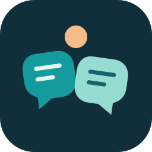
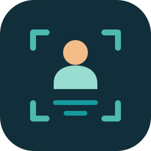

ATTUNE · EXPLORATION 02
More connection.
More room to be yourself.
Softer lettering. A clearer link to captions, the glasses, and the person wearing them.
The new wordmark is custom rounded lettering: open lowercase forms, gentler weight, and softly finished strokes. Every letter is drawn as a vector, so it looks the same on any device.
Conversation
Caption bubbles that open like petals.
Two readable caption bubbles preserve the welcoming shape you liked. The warm dot suggests a person between them, as well as the optimism of a new day.
My strongest direction for Attune: human, conversational, and still recognizable at a glance.



Shared view
The product, in one small symbol.
The lenses carry caption lines, making the connection to the glasses immediate. A warm dot brings the wearer into the picture.
The clearest hardware connection; especially useful on the glasses, packaging, and pairing screens.


In view
The person stays at the center.
Soft viewfinder corners surround a person and two caption lines. It describes useful information coming into the wearer’s view.
The most direct expression of agency and visual awareness; more functional in character.
